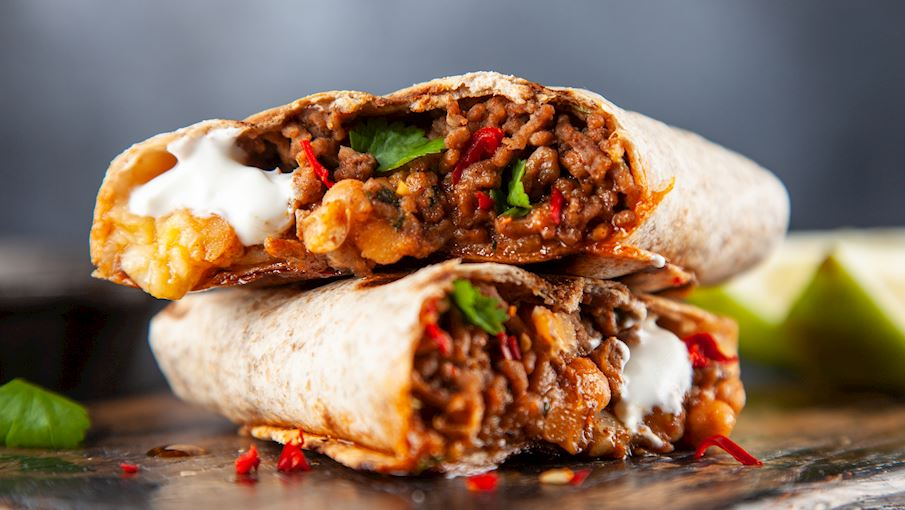

- firstly, in a tawa roast 3 tomato, 3 clove garlic and ¼ onion. you can alternatively roast in oven.
- flip in between until the onions and garlic turn golden brown.
- keep the roasted onion and garlic aside and continue to roast tomatoes.
- roast tomatoes, until the skin of tomatoes, start to peel off.
- cool the tomatoes completely, and transfer to the blender.
- also, add roasted onions and garlic.
- furthermore, add ¼ tsp cumin powder, 1 dried red chilli, 2 tbsp coriander, 6 slice jalapeno, ½ tsp salt and 1 tbsp lemon juice.
- blend to a coarse paste without adding any water.
- now add 2 tsp olive oil and give a mix.
- finally, enjoy roasted tomato salsa recipe with nachos chips.

Ingredients
Qty
Vegetable Oil
1 Tablespoon
Onion thinly sliced
1
Red pepper deseeded and sliced
1
Yellow pepper deseeded and sliced
1
Lime Juice
2 Tablespoon
white Rice
250gr
Corainder
2 Tablespoon